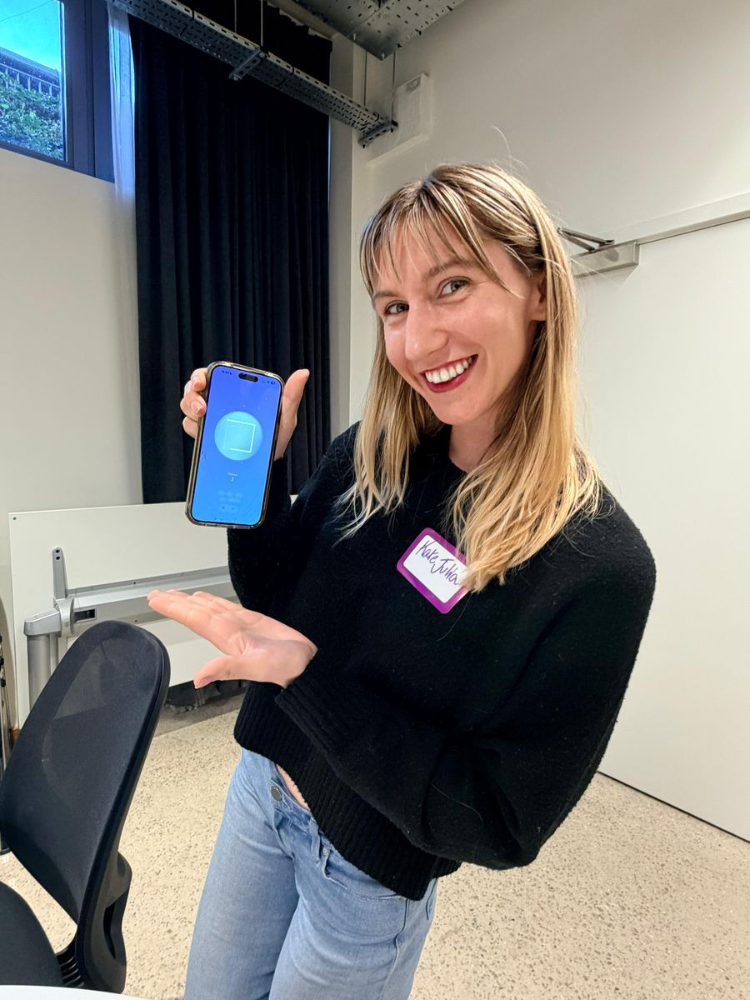

Relationship Identity Platform
VirWave
A living portrait of who you are in relationship, built from how you actually feel, not how you test. Seven archetypes. Emotional wavelengths. A system that grows more accurate over time.
Explore VirWave →my love letter to nervous systems.
